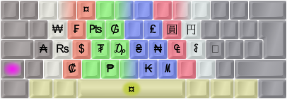
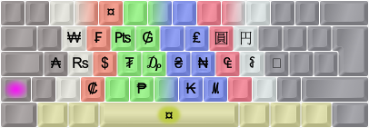

ENHANCED DEAD KEY MAPPINGS
Some dead keys are almost empty: The doubleacute only caters for ő ű, and ring only caters for å ů ẘ ẙ. There's also a whole iota dead key that only concerns itself with Greek characters. I'm tempted to stuff something good into those cracks even if it's not an entirely logical thing to do (because the name of the dead key wouldn't reflect these extra mappings). If you use up a key mapping on a dead key it really shouldn't sit there taking up keyboard space for the meager purpose of providing 2-3 glyphs!
There are 19 dead keys in my pkl layout right now. The common accents are there, together with a currency dead key on AltGr+4 and a Greek phonetic dead key on AltGr+5. Furthermore, some sparsely populated accent keys have been enhanced with extra content, such as superscripts/subscripts on acute/grave, fractions and negations on stroke/bar and ring symbols on ringabove. The most extensively reworked key is the double-acute which used to have only Uu and Oo and now contains a fairly rich set of math/science symbols (think of the double acute as akin to the equals and prime signs)! You really have to see them to believe them – I'll showcase some below but you can see them all using PKL (default Ctrl+Shift+1 for the help images):
01) Dot below
02) Hook, palatal hook
03) Horn, retroflex hook/tail
04) Currency:
 

05) Greek (phonetic):


06) Circumflex
07) Caron
08) Ogonek, comma below
09) Breve
10) Ring above, ring symbols, ligatures
11) Macron
12) Double-acute, math/science:


13) Umlaut/diaeresis
14) Tilde
15) Acute, superscripts


16) Grave, subscripts
17) Cedilla
18) Dot above
19) Stroke/bar, fractions


Note that the dead keys are designed to interact in clever ways through chaining: 'Ring' then 'angle' will produce 'arced angle', 'Tilde' with 'equals' will produce 'equal or approximately equal', Stroke with many symbols will produce slashed symbols (e.g., from 'identical to' you get 'not identical to') etc. The sequence you press the dead keys in may matter: Usually, start with the modifier(s) (such as 'stroke' for "not") then the symbol-producing key (such as 'maths' and then '=' which will usually produce '≡' but now gives you '≢' instead). At the moment, the only documentation for all this cleverness is snoping around the PKL layout.ini files, but logic will take you far too.